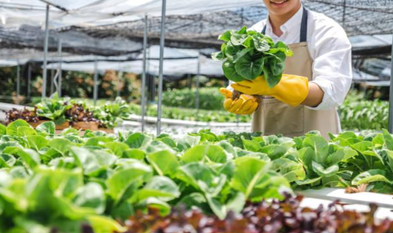

Author: Maame Konadu Appiahene (11136369)
Introduction: A Changing Landscape in Kentucky Agriculture
Agriculture has always been at the core of Kentucky's economy and cultural identity. From the rolling pastures of the Bluegrass to the corn and soybean fields of Western Kentucky, farming provides food, livelihoods, and heritage. Yet, Kentucky's agriculture now faces new challenges: unpredictable weather, declining soil fertility, increasing input costs, and market pressures. These challenges demand innovative and sustainable approaches to maintain productivity while protecting natural resources (FAO, 2021).
Sustainable agriculture offers a practical solution. It integrates ecological, economic, and social principles to ensure that food production supports current needs without compromising future generations (Altieri & Nicholls, 2017). Across Kentucky, more farmers are beginning to adopt sustainable agricultural practices (SAPs) such as cover cropping, rotational grazing, precision irrigation, and integrated pest management, supported by programs from the University of Kentucky Cooperative Extension and the USDA Natural Resources Conservation Service (USDA NRCS, 2023).
